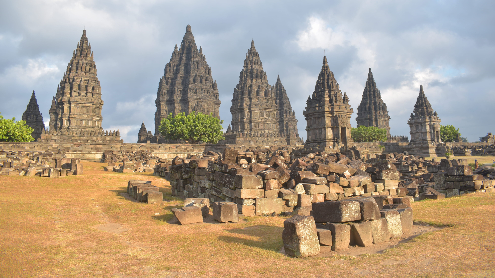

Tempat Wisata Populer
Yogyakarta, kota yang dikenal dengan kekayaan budaya dan sejarahnya, menawarkan beragam destinasi wisata yang tak hanya memanjakan mata, tetapi juga menyuguhkan pengalaman tak terlupakan. Dari keajaiban alam hingga peninggalan sejarah yang megah, setiap sudut Yogyakarta selalu siap menyambut wisatawan dengan kehangatan dan pesona khas Jawa. Mari telusuri tempat-tempat populer yang wajib Anda kunjungi saat berada di kota ini!
Candi Borobudur
Terletak di Magelang, tak jauh dari Yogyakarta, Candi Borobudur adalah salah satu keajaiban dunia yang mengagumkan. Dibangun pada abad ke-8 oleh Dinasti Syailendra, Borobudur merupakan candi Buddha terbesar di dunia dengan arsitektur megah yang terdiri dari sembilan tingkat bertingkat dan lebih dari 2.600 panel relief. Setiap relief menceritakan perjalanan spiritual menuju pencerahan, menggambarkan kehidupan Buddha dan nilai-nilai yang mendalam. Dari puncak candi, wisatawan bisa menyaksikan keindahan alam sekitar dengan latar belakang pegunungan, menciptakan suasana spiritual yang menenangkan. Tidak hanya menjadi tempat ziarah bagi umat Buddha, Borobudur juga menjadi destinasi wisata budaya yang penuh pesona dan sejarah.
Candi Prambanan
Candi Prambanan, kompleks candi Hindu terbesar di Indonesia, merupakan salah satu warisan budaya dunia. Dibangun pada abad ke-9, candi ini didedikasikan untuk Trimurti, tiga dewa utama Hindu: Brahma, Wisnu, dan Siwa. Prambanan terkenal dengan arsitektur megahnya dan ukiran-ukiran yang menggambarkan kisah epik Ramayana. Berlokasi di perbatasan Yogyakarta dan Jawa Tengah, candi ini menjadi destinasi wisata sejarah yang memikat dengan pesona dan kemegahan masa lalu.